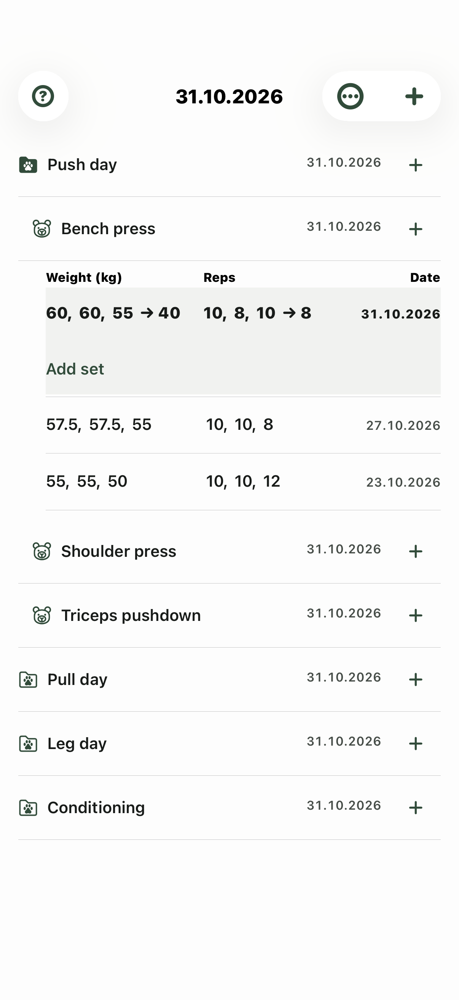
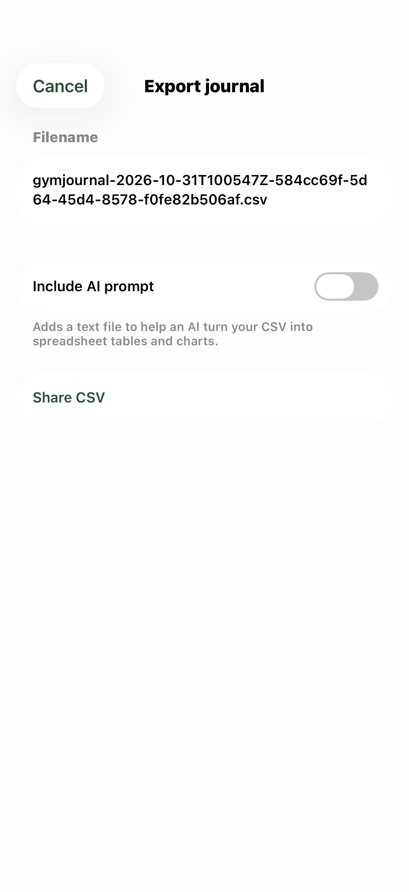

A journal for your time at the gym
Your training,
written down.
Keep your exercises, sets and past workouts together. Lift & Hop brings the familiarity of a training notebook to your iPhone.
Made for iPhoneWorks offlineNo app account

From first set to next session
A place for your routine.
Organize it your way, record what you did, and keep your last workout within reach.
Make it your journal
Create folders for your training days or muscle groups. Add strength and cardio exercises, then arrange them in the order that suits you.
Set up your journal →Record the work
Log weight and reps, timed cardio, or linked drop sets. Previous weights help you pick up where you left off; you enter what you actually performed.
Record a workout →Look back, keep going
Expand an exercise to see its history. Choose a layout and theme, correct a set, or move a workout to its proper calendar date.
Read your history →

Your journal, your copy
Keep a backup beyond your phone.
Your journal lives on your iPhone. Export it as CSV to keep a separate copy, work with it in a spreadsheet, or restore it later.
There is no live journal sync. Local recovery files help with imports; an export saved and checked somewhere off your device is your separate backup.
Learn about export and restore →A familiar space
Choose your kind of journal.
Four themes and three history layouts. The same records, presented the way you prefer.
Wild
Light paper, green accents, bears and hares.
Iron light
A light journal with warm orange gym icons.
Steel
Charcoal gray and silver gym icons.
Notes
A dark journal with yellow accents.
A hand with your journal?
Find a quick answer or get in touch.